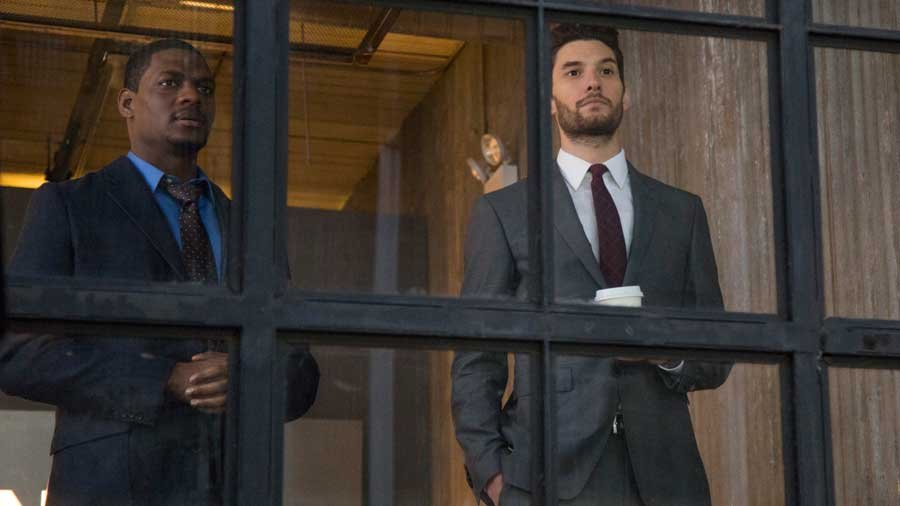

The Punisher, een Amerikaanse serie gebaseerd op een Marvel Comics-personage, en tevens een spin-off van Marvel’s Daredevil. De serie draait om oud-marinier Frank Castle (Jon Bernthal), die gebruik maakt van dodelijke wapens in zijn strijd tegen criminaliteit. Niks zal hem daarbij tegenhouden. p de meest brute manier verliezen tegenstanders hun leven. Frank is een antiheld met twijfelachtige methoden. Acteur Jon Bernthal is de ideale Frank Castle/Punisher. Een rol die hem op het lijf is geschreven. Als zijn alter ego The Punisher is hij intimiderend en soms compleet gestoord, maar het is Frank Castle die hier het scherm steelt. We duiken diep in het verleden van Castle, van zijn tijd in de oorlog tot het verlies van zijn familie. We beginnen steeds meer te begrijpen hoe Frank als personage in elkaar zit. Uiteindelijk bewonder je zijn toewijding om de daders van de moord op zijn familie te vinden. De acties van The Punisher zijn misschien extreem, maar na het zien van de hoeveelheid trauma die Frank heeft opgelopen begrijp je zijn motivatie en daden.
Bekijk hier de trailer van deze geweldige marvel-serie.
Niet alleen Frank Castle staat centraal, maar ook andere personages waarmee Frank in het leger heeft gezeten. Met in het bijzonder Billy Russo (rechts op de afbeelding hieronder) en Curtis (links op de afbeelding hieronder). Billy Russo (Ben Barnes) was de beste kameraad van Frank en de twee zagen elkaar als broers. Billy weet niet dat Frank nog leeft en neemt het nog steeds voor zijn oude vriend op als iemand een slecht woord over hem spreekt. Ook Curtis (Jason R. Moore) heeft in het leger gezeten met Frank, waar hij uiteindelijk een been heeft verloren. Curtis is één van de enige mensen die weet dat Frank nog leeft.
De serie kan geapplaudisseerd worden vanwege het neerzetten van een realistische kijk op het leven van veteranen. Verschillende personages uit de serie hebben in het leger gezeten en hier PTSS (Posttraumatische-stressstoornis) aan overgehouden. We zien door de serie heen hoe elk personage hiermee omgaat, en dat verschilt voor iedereen drastisch. Billy kan het leven als militair niet loslaten en kiest ervoor om nieuwe rekruten te trainen. Terwijl Curtis een praatgroep is gestart zodat hij en andere veteranen hun frustraties kwijt kunnen. In deze praatgroep bevindt zich een jonge militair, genaamd Lewis (Daniel Webber). Ook hij wordt door de serie heen ontwikkeld en laat de duistere kant van PTSS zien. Lewis is flink in de war over wat hij aanmoet met zijn leven buiten het leger om. Alle drie de personages (Billy, Curtis en Lewis) brengen een unieke kijk op het leven na de oorlog. De serie stelt daarbij de belangrijke vraag: kun je nog op geschikte wijze functioneren in de samenleving nadat je een leven gewend bent in het leger? Het antwoord hierop is voor iedereen anders, maar de verhaallijnen van Billy, Curtis en Lewis zorgen ervoor dat de Punisher serie een stuk dieper gaat dan gedacht.